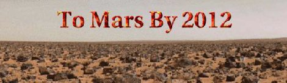

|
|

|
Announcements |
| |
Pending Collaborative Exobiology Experiments |
| |
Posted by David Gan on Sat., Oct 07, 2000 at 02:28 PM GMT-8
A proposal for a collaborative exobiology study has been submitted to Professor Antje Hofmeister and Scott Dawson for approval. So far, we have two students for this study: Eric Evans and Andrew LePhong. Candidate extremophiles and Archea are: iron, sulfur, halophilic and cyanobacteria. Professor David Boone, University of Portland's Subsurface Microbial Culture Collection (SMCC-Western Division) will be sending us a culture of Bacillus infernus, first isolated from Columbia basalt several kilometers deep. This species is the first strict anerobe found belong to the genus Bacillus. Martian basalt may harbor like species of bacteria. When the methodology has been finalized, we will commence. Meanwhile, a literature search continues to see if other experiments were done. If you are interested in this project, see me. We may be able to add one or two more students.
|
| |
New Microbiology Laboratory Course |
| |
Posted by David Gan on Wed., Sep 27, 2000 at 03:57 PM GMT-8
A new microbiology laboratory course is being offered as PMBC 112L, course code #71268 with Professor Antje Hofmesiter and Scott Dawson, Tuesdays 1-5 pm 208 GPB Laboratory for 2 units. UCB has not have a course like this one for years. You will learn to isolate, identify bacteria using basic microbiology techniques. The class will isolate bacteria, even Archea and extremophiles and run experiments. This class fits in beautifully with our Exobiology experiments to determine if they can survive under Martian conditions in soil simulants. A paper could come out of this project for presentation at NASA next spring. There will be one field trip on a Saturday for sample collection. All students and interested persons are encouraged to enroll in this class if they want to be part of the Exobiology Project. It is strongly recommended to learn the basic techniques. You may email Professor Hofmeister : ahofm@nature.berkeley.edu or Scott Dawson : sdawson@nature.berkeley.edu.
|
| |
New Microbiology Laboratory Course |
| |
Posted by David Gan on Wed., Sep 27, 2000 at 03:55 PM GMT-8
A new microbiology laboratory course is being offered as PMBC 112L, course code #71268 with Professor Antje Hofmesiter and Scott Dawson, Tuesdays 1-5 pm 208 GPB Laboratory for 2 units. UCB has not have a course like this one for years. You will learn to isolate, identify bacteria using basic microbiology techniques. The class will isolate bacteria, even Archea and extremophiles and run experiments. This class fits in beautifully with our Exobiology experiments to determine if they can survive under Martian conditions in soil simulants. A paper could come out of this project for presentation at NASA next spring. There will be one field trip on a Saturday for sample collection. All students and interested persons are encouraged to enroll in this class if they want to be part of the Exobiology Project. It is strongly recommended to learn the basic techniques. You may email Professor Hofmeister : ahofm@nature.berkeley.edu or Scott Dawson : sdawson@nature.berkeley.edu.
|
| |
New Microbiology Laboratory Course |
| |
Posted by David Gan on Wed., Sep 27, 2000 at 03:55 PM GMT-8
A new microbiology laboratory course is being offered as PMBC 112L, course code #71268 with Professor Antje Hofmesiter and Scott Dawson, Tuesdays 1-5 pm 208 GPB Laboratory for 2 units. UCB has not have a course like this one for years. You will learn to isolate, identify bacteria using basic microbiology techniques. The class will isolate bacteria, even Archea and extremophiles and run experiments. This class fits in beautifully with our Exobiology experiments to determine if they can survive under Martian conditions in soil simulants. A paper could come out of this project for presentation at NASA next spring. There will be one field trip on a Saturday for sample collection. All students and interested persons are encouraged to enroll in this class if they want to be part of the Exobiology Project. It is strongly recommended to learn the basic techniques. You may email Professor Hofmeister : ahofm@nature.berkeley.edu or Scott Dawson : sdawson@nature.berkeley.edu.
|
| |
Liquid Water and Exobiology Experiment Section |
| |
Posted by David Gan on Fri., Sep 22, 2000 at 11:05 AM GMT-8
The Triple Point of Water Experiment for Feasibility of Liquid Water on Mars will continue.
Providing that laboratory space and equipment availabity, interested students will be trained in basic microbiology techniques so that the exobiology experiments will proceed properly. Training will consist of:
Asepctio and pure culture techniques
Media and reagent preparation and sterilization
Use of the autoclave and fitration techniques
Gram Stain and Acridine Orange Stain Methods
Titering of bacterial suspensions and Plate Count Method
Inoculation of samples and subculturing
Microscopy
Biohazard handling and safety
These are the minimal requirements to do the experiments. In fact, this training could qualify you as a microbiology laboratory assistant.
After training, we will use available extremophile cultures under Level I (biohazard minimal).
David Gan
|
| |
Mars Projects Sign Up |
| |
Posted by David Gan on Wed., Sep 13, 2000 at 03:42 PM GMT-8
Professor Kuznetz announces that Wednesday, September 13th will be the sign up day for students in our continuing projects:
Space Suit Design and Repair, Web Page Maintenance, Search for Liquid Water and Life on Mars (Robotics Laboratory construction), Countermeasures (space physiology and bone mass loss), Habitat design and possibly some new ones, like reproductive effects from space travel and others.
|
| |
Beagle II Landing Site on Mars Announced |
| |
Posted by David Gan on Wed., Sep 13, 2000 at 03:36 PM GMT-8
The European Space Agency announced the landing site on Mars will be at Isidis Basin, a NASA high priority site. It will look for signs of life under rocks. Log on to:
to: www.space.con/news/spaceagencies/beagle_esa_000911.html for more information.
|
| |
International Conference |
| |
Posted by Lanman on Mon., Sep 04, 2000 at 11:06 AM GMT-8
Lanny Rudner and Diana Chai were invited to publish and present their paper, entitled "A Mars Mission Simulation to Determine the Efficacy of 0.38 G as a Countermeasure to Microgravity Induced Bone Demineralization," at the 30th Annual International Conference on Environmental Systems in Toulouse, France during July 2000. They presented their paper in the "Environmental Considerations in Microgravity" technical session, chaired by Bonnie Dalton, Deputy Chief of Life Sciences at the NASA Ames Research Center.
|
| |
Space Shuttle Experiment |
| |
Posted by Lanman on Mon., Sep 04, 2000 at 10:57 AM GMT-8
Lanny Rudner is a research assistant for Dr. Bernard Halloran at the University of Califonria, San Francisco Veterans Administration Hospital. Lanny is working on an experiment which will fly on the Space Shuttle during the Spring of 2002. He and Dr. Halloran are studying the role of age in the response of bone to spaceflight. The flight experiment will study bone loss in young vs. old rats using a novel bone labeling technique (an osmotic mini-pump implanted in the rats will time-release the bone label).
|
| |
"Vomit Comet" Flight |
| |
Posted by Lanman on Mon., Sep 04, 2000 at 10:48 AM GMT-8
Diana Chai and Lanny Rudner have recently been accepted to the NASA Reduced Gravity Student Flight Opportunities Program. They will conduct an experiment on NASA's KC-135 "Vomit Comet" at Johnson Space Center in Houston, Texas, during February 2001. Their experiment will test a novel enhancement to microgravity treadmill running (the "Vomit Comet" is an airplane that flies in parabolic trajectories and which can create up to 30 seconds of "zero-g" time for researchers and astronauts to conduct experiments and train). After the flight, the team will conduct their Outreach Plan. They will present their work to the Berkeley/Oakland community by making presentations to faculty and students at UC Berkeley, making presentations in local schools, inviting local students into their lab for hands-on activities, and presenting at the Lawrence Hall of Science. Information about these events will be posted after the February flight. The following address, from the Student Flight Opportunities webpage, will show you a list of the schools and projects accepted for the February flights: http://www.tsgc.utexas.edu/floatn/2000/august2000/teams.html)
|
| |
Hot Web Page |
| |
Posted by David Gan on Fri., Aug 25, 2000 at 11:37 AM GMT-8
Log on to: www.SPACE.com It featured our talks at the Mars Society at Toronto, though they may be gone by now. News from Professor K: Lanny has a job at UCSF doing the bone loss during space travel project. That's all for now, see you all at class next Monday.
|
| |
Fall Semester Schedule |
| |
Posted by David Gan on Fri., Aug 25, 2000 at 05:05 AM GMT-8
The Mars2012 class is designated as Earth and Planetary Science 98/198, meeting 4:10 to 5:30 pm on Mondays and Wednesdays at Room 325 McCone Hall. It is listed under Professor Frank Morrison's name though Professor Lawrence Kuznetz is heading this class. There will be a general organization meeting after class. We may have several new projects this semester. See you all there. Tell and bring a friend to this exciting class!
|
| |
NASA Lunar and Planetary Workshop at Houston |
| |
Posted by David Gan on Fri., Aug 04, 2000 at 01:38 PM GMT-8
There were over 200 papers presented by scientists from Russia, Germany, England, France, Italy and a few from UC Berkeley at the Lunar and Planetary Institute's "Concepts and Approaches for the Exploration of Mars, July 18-20th. The theme appears to be Water follows Life and various instrumentations to search for biomarkers. I presented a paper on the Conceptual Model of a Robotics Laboratory to Search for Life in Martian subsurface water and I had only ten minutes to make my point. Pertinent to my our project, some new microscopy techniques appear.
They are Atomic Force Microscopy, Confocal Microscopy and Scanning Probe Microscopy. The European Space Agency (ESA) Beagle II presented their experiments. David Des Marais from the Ames Resarch Center told me that NASA was shy about using robotics because of the Viking inconclusive experimental results, but it is gradually returning to the idea of favoring robotics.
I will present the same paper at the Mars Society Convention at Toronto, Canada August 11th. Professor Kuznetz will present our Triple Point of Water experimental results on August 10th. Hopefully, our presentations will generate interest for grant funding for our projects.
|
| |
Liquid Water Found on Mars |
| |
Posted by David Gan on Thu., Jun 22, 2000 at 03:21 PM GMT-8
NASA reported today that the Mars Global Surveyer has found liquid water on Mars. Just where we said we would be...rightr in the deep canyons where the temperatures rise up above zero degrees C.
Now we will have a good chance of finding some form of life there, most probably bacteria, but there may be higher forms of Protista, too. Watch for more announcements by NASA. I hope to present a paper on my conceptual model of the robotics laboratory to search for life on Mars at Lunar and Planetary Institute (LPI) at Houston July 17-19. I have listed all in the Geology section as co-authors since you may be working on this project this fall. We will need engineering, computer science majors as well as biology people on this project. I am studying several models of microscopy for this laboratory. Stay tune for more news. Have a nice summer!
|
| |
Martian subsurface liquid water |
| |
Posted by David Gan on Fri., May 12, 2000 at 01:06 PM GMT-8
In the June 2000 issue of Discover page 28, some indirect evidence of subsurface water may exists today.
It shows a picture of deep water channel 100 miles side and 1000 miles deep.
|
| |
HEDS-UP and Class BBQ |
| |
Posted by David Gan on Mon., May 08, 2000 at 01:12 PM GMT-8
Our students gave it their best shot at the HEDS-UP convention despite the fact they
the fact that they arrived late and did the rehearsals til four in the morning just hour before their presentation.
A BBQ is planned for May 21st, Sunday after the finals to get together to eat, discuss next semster's plans and ideas for for projects. So come and be be prepared with your ideas.
The time: 1:00 to 5:00 pm Sunday May 21ar.
Place: David Gan's BBQ pit at 1637 Franklin Street, near Cedar in Berkeley, just one block west of the North Berkeley BART station. You could take BART, get off of the North Berkeley Station, walk westward to Franklin Street. Maps will be distributed at the last class on Monday. Please let me know if you are a vegetarian. I plan to have Shish Kabob, soft drinks, cookies, chips etc.
If it rains, it will be a buffet indoors.
RSVP: (510) 649-1665 or email: dcgan@worldnet.att.net
|
| |
Presentations |
| |
Posted by Brian on Fri., Apr 21, 2000 at 10:12 AM GMT-8
Monday, April 24th and Wednesday, April 26th from 4 to 5:30
PM in 365 McCone Hall, we will be presenting our talks:
"Countermeasures to Microgravity" and "The Hunt for Liquid
Water on the Surface of Mars Today" in preparation for the
HEDS-UP forum at the Lunar and Planetary Institute in May.
Please attend to show support for and help us prepare these
presentations!
|
| |
Martian Weather Data |
| |
Posted by David Gan on Thu., Feb 17, 2000 at 01:26 PM GMT-8
The latest Martian weather data on surface temperature and pressure may be found on the following Web Sites:
http://nova.stanford.edu/projects/mgs/late.html
http://www.jpl.nasa.gov/missions/
We will use the data to plot the temperatures/pressure on our general Mars map, then identify possible subsurface ancient water sites such as Hebe chasma and the Gusev crater.
We hope to resolve the controversy if liquid water is feasible on the Martian surface from permafrost and wet soil.
Dr. Robert Quinn has been contacted for the Triple Point of Water experiment to be done on campus.
|
| |
Old Papers |
| |
Posted by Brian on Tue., Jan 25, 2000 at 04:17 PM GMT-8
I've posted all of the group's papers from past semesters
here. Enjoy.
|
|
Upcoming Events |
|
Site Additions |
| |
|epoxy| has owned jooo! epoxy@hackermail.com
keep up the work. i admire your projects. that is why i didnt tear this
page down :)
peace.
- 11/15/99: The About Us and
Get Involved pages now
contain pertinent information. The group
constitution is also
available.
- 10/18/99: The entire site's dynamic content generators have been
rewritten in Python, yielding faster-loading and more reliable
pages. Report problems to
Brian.
- 9/21/99: Preliminary information on
past projects and getting involved
is available. The links page is back.
- 9/10/99: New calendar of events system
|epoxy| has owned your site dude. epoxy@hackermail.com
good luck withthe site. i admire your project....and your scripting in
python :) but update it!
|
|